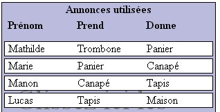
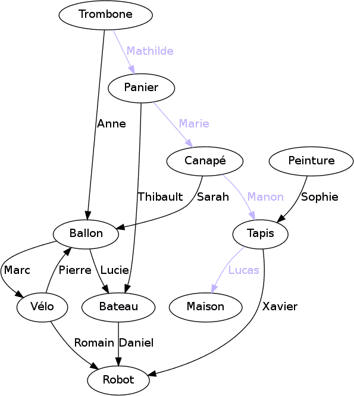

À la suite d'une inondation, Castor a perdu tout ce qu'il possédait, sauf un petit trombone rouge. Mais Castor ne perd pas espoir : il compte récupérer une maison grâce à son trombone.
Pour cela, Castor a passé des heures sur le site d'échange en ligne CastorBay. Il a sélectionné la liste d'annonces montrées ci-dessous. Par exemple, la première annonce indique qu'Anne a besoin d'un trombone et qu'elle est prête à donner un ballon en échange.
Aidez Castor à sélectionner et ordonner les échanges à effectuer afin d'échanger son trombone contre une maison.
|
Prénom Prend Donne Anne Trombone Ballon Mathilde Trombone Panier Lucie Ballon Bateau Daniel Bateau Robot Marc Ballon Vélo Thibault Panier Bateau Marie Panier Canapé Sarah Canapé Ballon Pierre Vélo Ballon Manon Canapé Tapis Xavier Tapis Robot Sophie Peinture Tapis Romain Vélo Robot Lucas Tapis Maison |
Glissez ici les offres, dans le bon ordre. Prénom Prend Donne |
Voici la solution :

La manière la plus rapide de trouver la solution consiste à partir de la fin. Pour avoir une maison, il faut forcément avoir un tapis avant. Pour avoir un tapis, il faut un canapé ou de la peinture. Mais vu que personne n'offre de la peinture, il faut forcément un canapé. Pour avoir un canapé, il faut forcément un panier. Pour avoir un panier, il faut forcément un trombone. Et ça tombe bien, on en a un !
La table fournie en question décrit ce qu'on appelle un graphe orienté. Dans ce graphe, on présente chaque objet par un rond et chaque offre d'échange sous la forme d'une flèche.

Pour répondre à la question du sujet, il suffit de trouver un chemin entre l'objet « Trombone » et l'objet « Maison ». Le chemin qui convient est coloré.